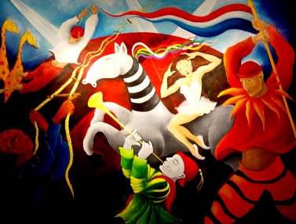

Carnival of my Heart
(7ft. x 9ft.)
The final piece of this collection represents various ethnic groups in the world gathering together to celebrate the movement of life. The waving flag represents unity and the ladders provide ways of crossing barriers and reaching out to one another. The striped and dotted animals welcome all eccentricities. The trumpet played by the dwarf invites the world to join in to play with Passion and dance with Joy!